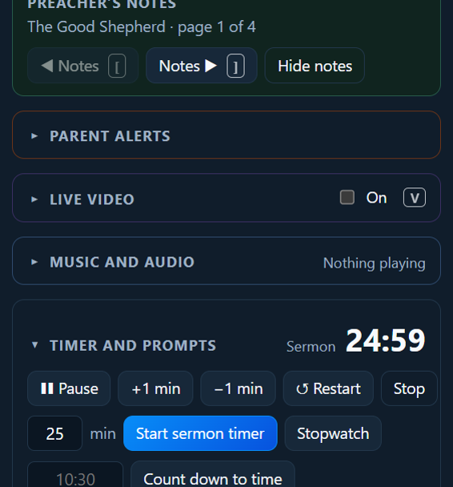
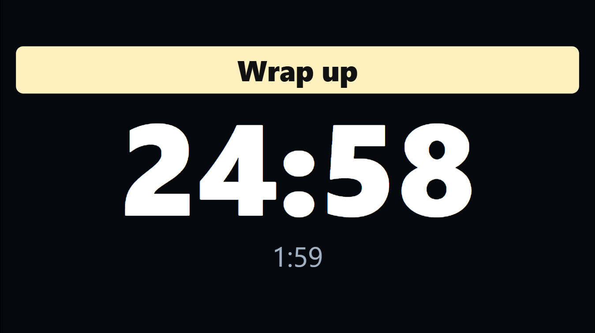
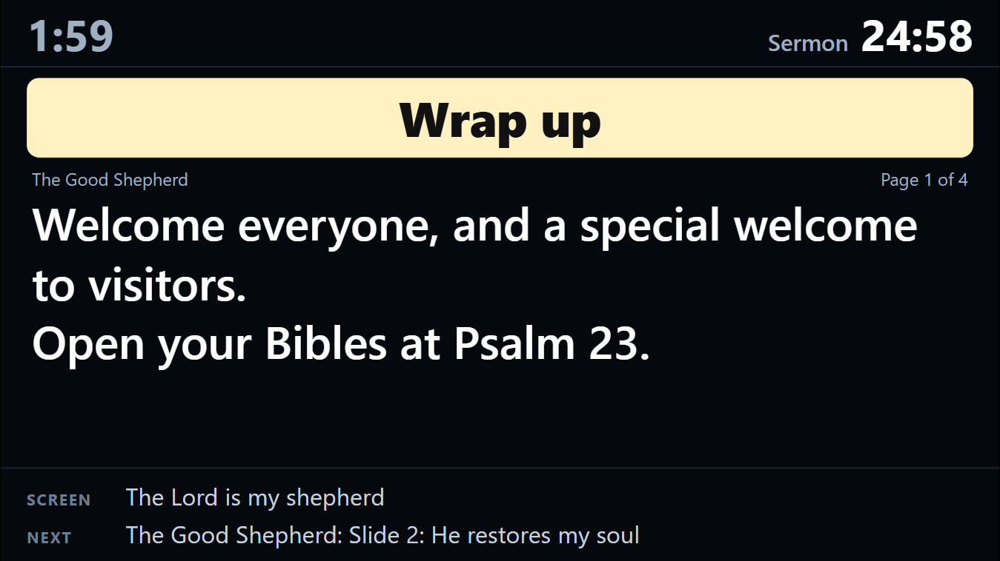

Running a service
Timers and prompts
Open Timer and prompts in the right-hand column.

Timers
- Start sermon timer: type the minutes (say
25) and click. It counts down. - Count down to time: type a time like
10:30for “Service starts in…”, before the service. - Stopwatch: counts up.
While a timer runs: ❚❚ Pause / ▶ Resume, +1 min and −1 min, ↺ Restart and Stop.
The timer shows on the preacher’s screen and the timer screen. It turns amber in the last few minutes and red when time is up (it keeps counting, so you can see how far over).

Tick Also show the countdown on the congregation screen to show it to everyone, for example “Service starts in 4:59” before the service.
Prompts
Prompts are quiet messages for the preacher or the band. They show on the preacher’s screen and timer screen only, never to the congregation.
- Quick prompts: 5 minutes left, 2 minutes left, Wrap up, Slow down, Mic is off.
- Or type your own and click Show.
- Clear takes it away.

The automatic prompt
PraiseAV can show “5 minutes left” by itself when the sermon timer gets there. Tick Automatically show and set how many minutes, or untick it to switch it off.
A timer screen
Some churches put a big timer where the preacher or band can see it (a TV on the floor at the front, say). In Screens…, give that screen the Timer job. See Screens.